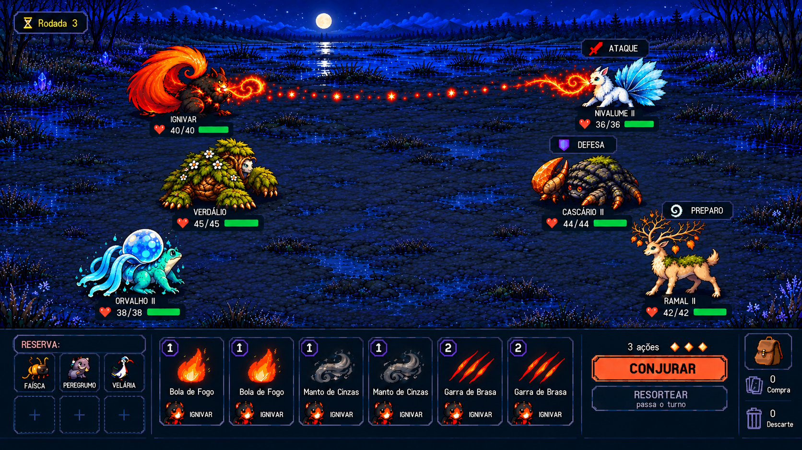

Referências da batalha
41 imagens em 12 etapas. A referência abaixo foi aprovada como alvo visual do MVP. A galeria funciona com arquivos locais, sem serviços externos.
Índice · Catálogo e hashes · Design de batalha
Alvo visual aprovado
Horizontal elevada · grupos quase alinhados · reservas, cartas, ações e utilidades em quatro zonas.

Ler o contrato visual aprovado
Aprovação de direção visual. Valores, conteúdo e mecânicas ilustrados continuam sujeitos às decisões e ao protótipo.
Histórico de exploração
Conceitos ilustrados iniciais · 3 imagens
Primeiros conceitos 2D / 4×4 · 3 imagens
Primeiro refinamento de câmera e chão · 1 imagens
Estudo anterior de até seis ativos · 2 imagens
Comparação 2×2 / 4×4 e HUD · 6 imagens
Conceitos de formação 3×3 · 3 imagens
Variações de cenário, elenco e golpes · 7 imagens
Ocupação diagonal 1×1 / 2×2 / 3×3 · 4 imagens
Evoluídos grandes: diagonal e horizontal · 3 imagens
Estudos de altura de câmera · 4 imagens
Refinamento de proporção, formação e HUD · 4 imagens